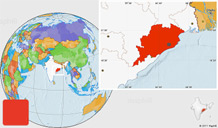

Information

Model-Based Testing and Monitoring for Embedded SoftwareRatnesh Kumar Dept. of Electrical & Computer Engineering Iowa State University Email:rkumar@iastate.edu Abstract: In many application domains, Simulink/Stateflow serves as a platform for model-based development of the reactive embedded code, that interacts with its environment in real-time fashion. The talk will present a model-based approach for testing Simulink/Stateflow code, based on its automated translation to input-output extended finite automaton (I/O-EFA), followed by automated test-generation, guaranteeing user-defined code as well as requirements coverage, and also support for automated test-execution and error-localization. While testing is useful for design-time error analysis, the talk will further discuss our model-based approach for run-time error monitoring, detection and localization. Monitoring at system level (as opposed to software level) is necessarily stochastic, and a more general I/O-Stochastic Hybrid Automaton (I/O-SHA) model is used, and condition is obtained for bounded-delay detectability, and achieving desired levels of false-positives/-negatives. |
||
| Speaker Biography: | ||
|
Analytical and Computer-Aided Modeling of Post-CMOS Devices in Emerging Novel TechnologiesAshok Srivastava Division of Electrical & Computer Engineering School of Electrical Engineering & Computer Science Louisiana State University, Baton Rouge, Louisiana, U.S.A. Email:eesriv@lsu.edu URL: https://www.ece.lsu.edu/fac/Srivastava.html Abstract: In search for novel technologies, no such material has aroused so much interest other than carbon nanomaterials since the discovery of one-dimensional carbon nanotube in 1991 by Iijima. The carbon nanotube (CNT) has excellent electrical, mechanical and thermal properties which has made the CNT one of the promising materials for applications in nanoelectronics and micro/nano-systems. Recent work on analytical modeling equations describing the current transport in carbon nanotube field effect transistors compatible with VLSI CAD tools such as Cadence/Verilog-AMS and interconnects will be presented for use in design of emerging logic devices similar to CMOS design style, molecular sensing and bio-electronics circuits. The two-dimensional material graphene has demonstrated exceptional electronic properties such as the current density 2-3 orders of magnitude higher than that of the copper interconnect used in current silicon technologies, and exhibited potential for energy harvesting devices, displays, sensors and storage cell batteries. Recent work on both analytical and computer-aided modeling of novel graphene transistors for RF, and ultra-high performance integrated circuit design will be presented. |
||
| Speaker Biography: | ||
|